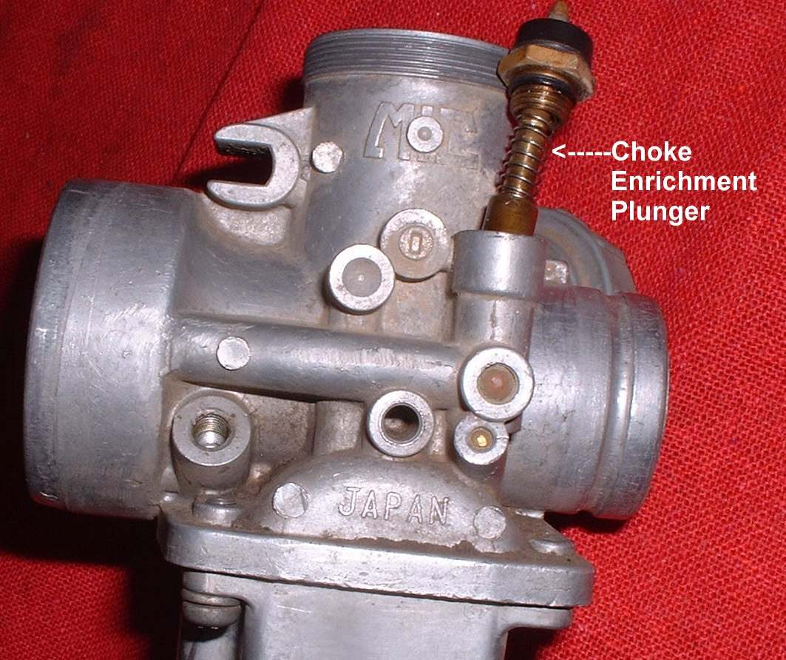
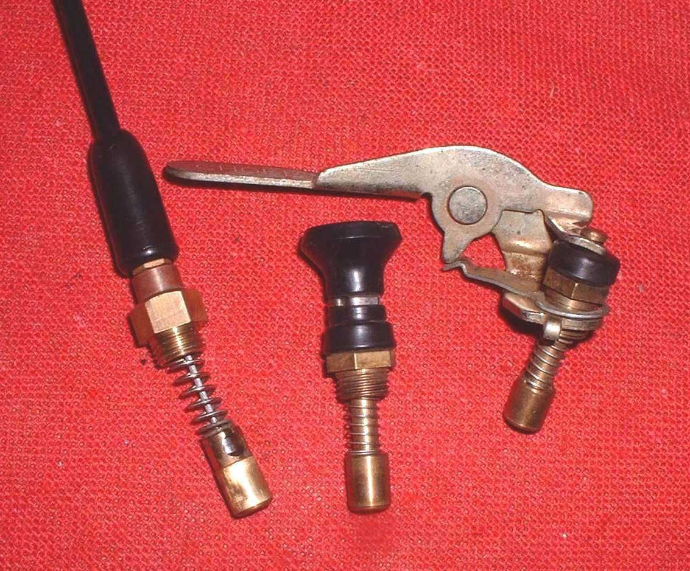
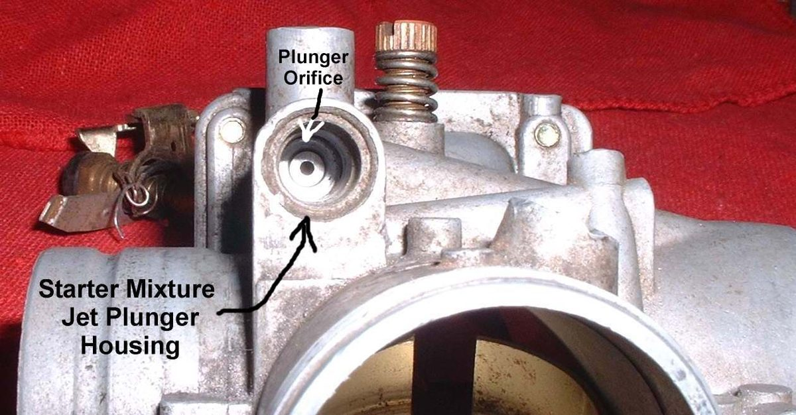
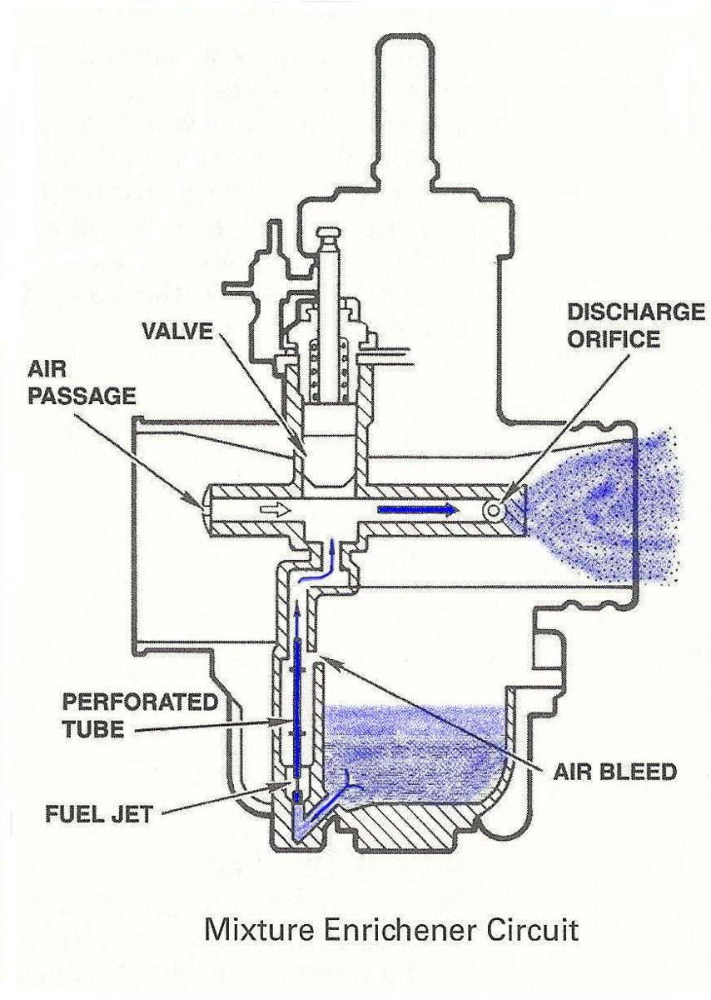
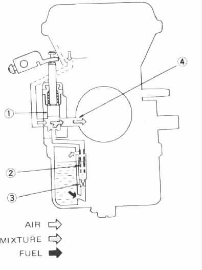

On carburettor bikes with a handlebar choke lever, the choke cable runs from the lever to the carburettor. Many bikes have the choke lever on the carburettor itself and no cable. Fuel-injected bikes have no choke; the computer richens the mixture when cold.
What it does
Pulling the choke lever pulls the cable, which closes a flap or opens a starter jet in the carburettor. This gives a richer mixture so a cold engine starts. When the lever is pushed back, a spring should close the choke fully. If the cable sticks or is out of adjustment, the choke may never work, or may stay partly on and waste fuel.
Signs it is worn or failing
- Lever does nothing or is stiff: Choke lever or cable does not work.
- Hard to start cold: Hard to start when cold.
- Choke stays partly on: black smoke and high fuel use: Choke is stuck, Runs rich.
- Frayed or stiff: Cable frayed or stiff.
When to replace it
Replace a cable with broken strands, a kinked outer, or one that will not slide after cleaning.
What to match when buying
- Make, model and year; carburettor type. Length, end fittings and the carburettor-end plunger or nipple must match.
- Compare with the old cable before fitting.
Fitting notes
- Set it so the choke closes fully when the lever is off, and opens fully when on.
- Route away from the exhaust and engine heat.
- See Adjust the choke cable and Check the choke or starter valve.
- On many carburettors the cable lifts a plunger that opens the starter circuit. It works only when the throttle is closed. See Clear a blocked starter circuit.